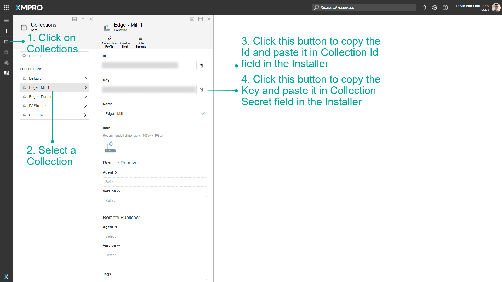

Stream Host Terraform
Introduction
This guide covers deploying XMPro Stream Host using the Azure Terraform module. You can deploy Stream Host either as part of the full XMPro platform or as a standalone container that connects to an existing Data Stream Designer instance.
Prerequisites
Software Requirements
- Terraform v1.0 or later
- Azure CLI for authentication
- Azure subscription with appropriate permissions
For Standalone Deployment
- An existing XMPro Data Stream Designer instance
- Collection ID and Secret from your DS instance
Hardware Requirements
The Terraform module allows you to configure Stream Host resources:
| Component | Small (Default) | Medium | Large |
|---|---|---|---|
| Stream Host | 1 CPU, 4 GB RAM | 2 CPU, 8GB RAM | 4 CPU, 16GB RAM |
Note
CPU can be between 0.25 and 4 cores. Memory can be between 0.5 and 16 GB.
Deployment Options
Option 1: With Full XMPro Platform
When deploying the complete XMPro platform, Stream Host is automatically included. See the basic example in the terraform-xmpro-azure repository.
Option 2: Standalone Stream Host
To deploy only Stream Host to connect to an existing DS instance, use the dedicated Stream Host example from the terraform-xmpro-azure repository.
The example includes:
- Complete Terraform configuration files
- Variable definitions with defaults
- Step-by-step deployment instructions
- Troubleshooting guide
Quick Start
Clone the repository
git clone https://github.com/XMPro/terraform-xmpro-azure.git cd terraform-xmpro-azure/examples/stream-hostConfigure your deployment
# Copy the example variables file cp terraform.tfvars.example terraform.tfvars # Edit with your specific values nano terraform.tfvarsDeploy
terraform init terraform plan terraform apply
For detailed configuration options and examples, refer to the Stream Host example README.
Getting Collection Credentials
For standalone deployments, you need collection credentials from Data Stream Designer:
- Open your XMPro Data Stream Designer
- Navigate to Collections
- Select or create a collection for the Stream Host
- Go to Settings tab
- Copy the Collection ID and Collection Secret

Key Configuration Variables
The Stream Host module supports various configuration options. Here are the most important ones:
Resource Allocation
- stream_host_cpu: CPU cores (0.25 to 4)
- stream_host_memory: Memory in GB (0.5 to 16)
Environment Variables
- SH_PIP_MODULES: Python packages to install
- ADDITIONAL_INSTALLS: System packages to install
- Custom variables: Any additional environment variables
For a complete list of variables and configuration options, see the module documentation.
Common Configuration Examples
Python Package Installation
Install Python packages for data processing:
# In your terraform.tfvars
environment_variables = {
"SH_PIP_MODULES" = "pandas numpy scikit-learn"
}
System Dependencies
Install additional system packages:
# In your terraform.tfvars
environment_variables = {
"ADDITIONAL_INSTALLS" = "git build-essential python3-dev"
"SH_PIP_MODULES" = "pandas numpy scikit-learn tensorflow"
}
Resource Scaling
Adjust resources for your workload:
# In your terraform.tfvars
stream_host_cpu = 4
stream_host_memory = 16
For more advanced configurations including:
- Volume mounts
- Monitoring integration
- Multiple Stream Host deployments
- Custom networking
See the comprehensive examples in the terraform-xmpro-azure repository.
Troubleshooting
Stream Host Not Connecting
If the Stream Host doesn't appear in Data Stream Designer:
Check container logs
az container logs --resource-group <rg-name> --name <container-name>Verify environment variables
az container show --resource-group <rg-name> --name <container-name> --query "containers[0].environmentVariables"Check network connectivity
- Ensure DS server URL is accessible
- Verify no firewall blocking outbound connections
Other Common Issues
For comprehensive troubleshooting including:
- Python package installation failures
- Resource allocation problems
- Network connectivity issues
- Container restart loops
Refer to the troubleshooting section in the Stream Host example.
Best Practices
Start Simple
- Use the example configuration as a starting point
- Test with minimal configuration first
- Add complexity incrementally
Version Control
- Store your Terraform configurations in version control
- Use
.gitignorefor sensitive files - Tag deployments for easy rollback
Security
- Never commit credentials to version control
- Use Azure Key Vault for secrets
- Enable managed identities where possible
Monitoring
- Always configure Application Insights
- Set up alerts for critical metrics
- Review logs regularly
Complete Example Repository
All the code examples, configuration files, and detailed documentation for Stream Host deployment are available in the terraform-xmpro-azure repository:
- Stream Host Example - Complete standalone deployment
- Basic Platform Example - Full platform with Stream Host
- Module Documentation - Detailed variable reference
Related Documentation
- Stream Host Docker Installation - For standalone Docker deployments
- Collection and Stream Host Concepts - Understanding Stream Host architecture
- Azure Terraform Deployment Guide - Complete platform deployment guide
Next Steps
After deployment:
- Access Data Stream Designer to verify Stream Host connection
- Create your first data stream
- Configure agents and connectors
- Monitor performance and adjust resources as needed
Last modified: August 05, 2025